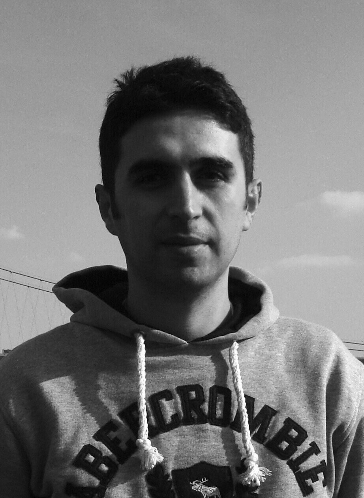
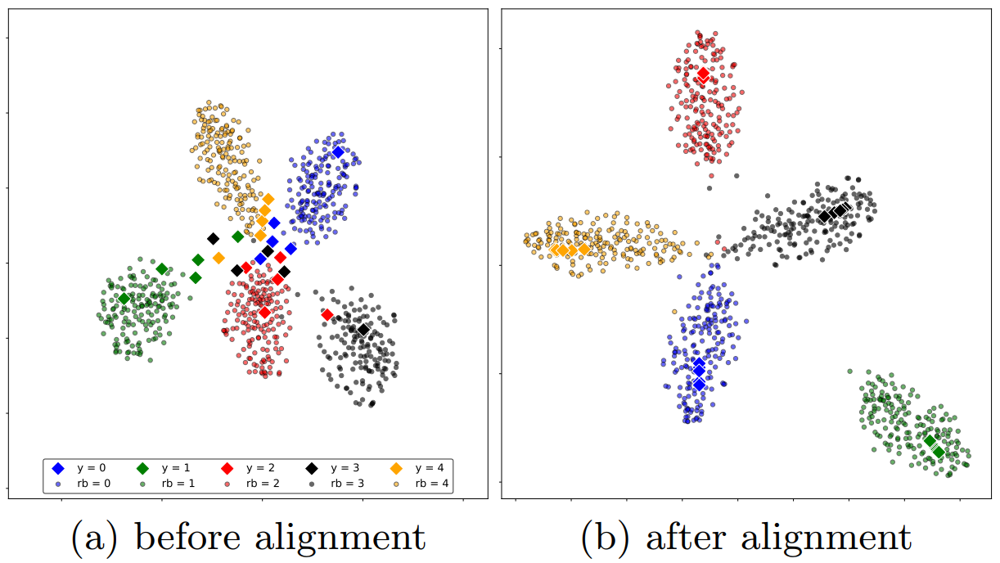
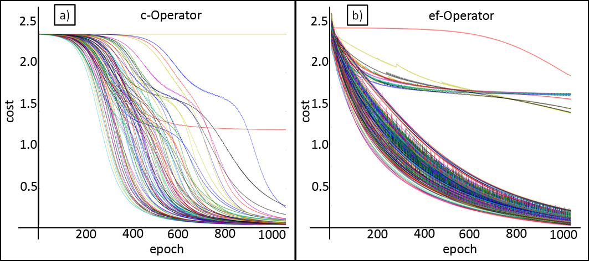
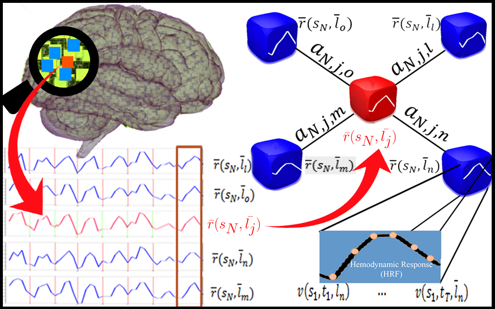

|
Arman Afrasiyabi PhD candidate, IID, EECE Department, Université Laval
I am a PhD candidate at Institute Intelligence and Data (IID) of Université Laval, supervised by Jean-François Lalonde and Christian Gagné. My research is based on the investigation of machine learning and deep learning in the context of computer vision. I am working on meta-learning and representation learning in the low supervision regimes. Up to now, with my supervisors, we presented the idea of associative alignment (eccv-2020) to increase the learning capacity, also we proposed persistent mixture model (arxiv-under review) as a representation learning approach to gain adaptivity in few-shot classification problem. Now, we are investigating a novel approach under self-supervised context to leave out the labeling cost in the base domain in the meta-learning approaches.
For more details, see the CV and Google Scholar.
|
 |
News and updates
- New paper on arxiv: Persistent Mixture Model Networks for Few-shot Image Classification!
- Our paper “Associative Alignment for Few-shot Image Classification” got accepted as a spotlight (5% acceptance rate) at ECCV2020!
- Our abstract is acceptanced at Montreal AI Symposium (MAIS) 2020!
- I got accepted and attending to CIFAR Deep Learning + Reinforcement Learning Summer School 2020!
- In January 2019, I successfully passed my PhD retrospective and prospective evaluations: [presentation] and [proposal] .
- Our paper “Non-Euclidean Vector Product for Neural Networks” got accepted at ICASSP 2018.
Talks and presentations
- At ECCV 2020, I prepared a spotlight presentation on our last work “Associative Alignment for Few-shot Image Classification”. [the video]
- In July 2020, I gave a talk on ”Advances in few-shot learning” at Université Laval, IFT 6501. [my slides]
- In March 2020, I gave a talk on my last reasearch project at Intelligence and Data Institute (IID), Université Laval. [my slides]
- In January 2018, I gave a presentation on ”Neural Turing Machines: RNN, NTM and DNC”. [my slides-NTM] [my slides-RNN]
Publications
See my google scholar for complete list of the publications.

|
Persistent Mixture Model Networks for Few-Shot Image Classification.
Arman Afrasiyabi
Jean-François Lalonde, Christian Gagné, arXiv:2011.11872v1, this work is under review.
We introduce Persistent Mixture Model (PMM) networks for representation learning in the few-shot image classification context. While previous methods represent classes with a single centroid or rely on post hoc clustering methods, our method learns a mixture model for each base class jointly with the data representation in an end-to-end manner. |
|  |
Associative Alignment for Few-shot Image Classification.
Arman Afrasiyabi, Jean-François Lalonde, Christian Gagné, in European Conference on Computer Vision (ECCV) 2020 as a spotlight presentation. We propose the idea of associative alignment for leveraging part of the base data by aligning the novel training instances to the closely related ones in the base training set. This expands the size of the effective novel training set by adding extra "related base" instances to the few novel ones. [10 min video] |
|  |
Non-Euclidean Vector Product for Neural Networks.
Arman Afrasiyabi, Diaa Badawi, Baris Nasir, Ozan Yildiz, Fatos T. Yarman Vural, A Enis Çetin, in International Conference on Acoustics, Speech and Signal Processing (ICASSP) 2018. We present a non-Euclidean vector product for artificial neural networks. The vector product operator does not require any multiplications while providing correlation information between two vectors, unlike ordinary neurons which require inner product of two vectors. |
|  |
A sparse temporal mesh model for brain decoding.
Arman Afrasiyabi, Itır Önal Ertuğrul, Fatos T. Yarman Vural in the 15th International Conference on Cognitive Informatics & Cognitive Computing (ICCI*CC) 2016 hosted by Stanford University. We propose a new architecture, called Sparse Temporal Mesh Model (STMM), which reduces the dimension of the feature space by combining the voxel selection methods with the mesh learning method. We, first, select the “most discriminative” voxels using the state-of-the-art feature selection methods. |
|
The design of this page is inspired from professor Alexei (Alyosha) Efros's homepage. |